Kule Pro: stok, sipariş ve fatura dosyalarınızdan bakılacak işler
Kule Pro, bir işletmenin SAP dışa aktarımlarını ve tedarikçi dosyalarını alıp bakılacak işlerin listesini çıkarır. Kararı insan verir diye tasarlandı: araç her bulguyu, dayanağını ve sorumlusunu gösterir. Aşağıda dosyanın nasıl okunduğunu, her modülün ne yaptığını ve sayıların nereden geldiğini bulabilirsiniz.
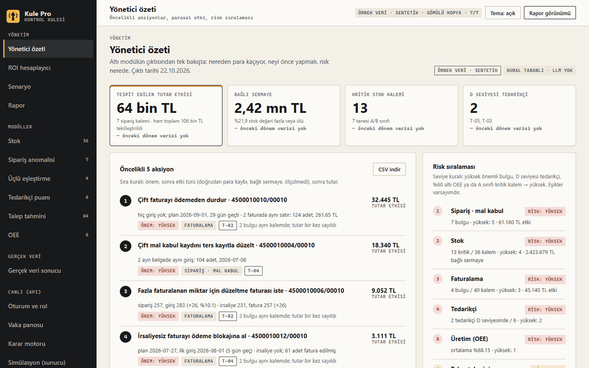
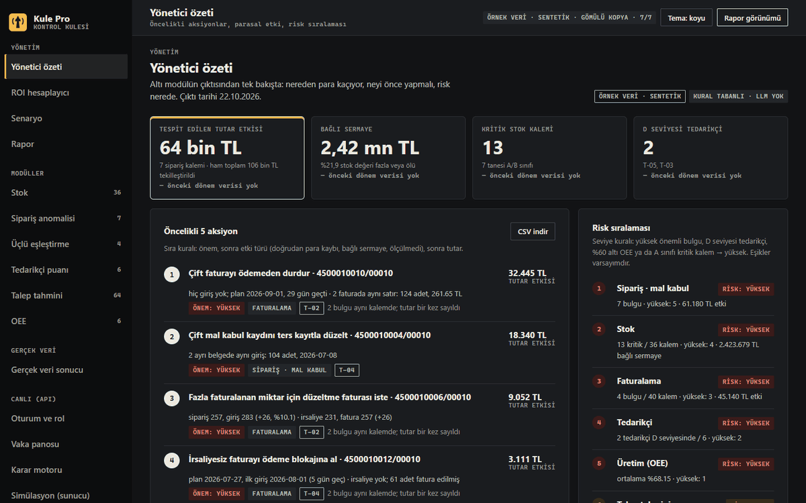
Tutarsızlık ayrı tablolarda saklanır
Stok, sipariş, mal kabul ve fatura çoğu zaman ayrı tablolarda ve ayrı kişilerde tutulur. Her tablo kendi içinde doğru görünebilir; fark ancak kayıtlar yan yana konduğunda ortaya çıkar.
Örneğin bir siparişle faturası miktar ya da tutar bakımından uyuşmayabilir ve bunu kimse, iki kayıt bir araya getirilene kadar görmez.
Dosyayı yüklersiniz, satırlar okunur
Dosyayı yüklersiniz. Stok, sipariş, mal kabul, fatura ve SAP dışa aktarımları kabul edilir; SAP dışa aktarımları CSV ya da .xlsx biçiminde gelebilir.
Her satır okunur. Okunamayan satır atlanmaz; satır numarası ve nedeni listede gösterilir. Hiç satır okunamayan dosya kabul edilmez ve nedeni gösterilir.
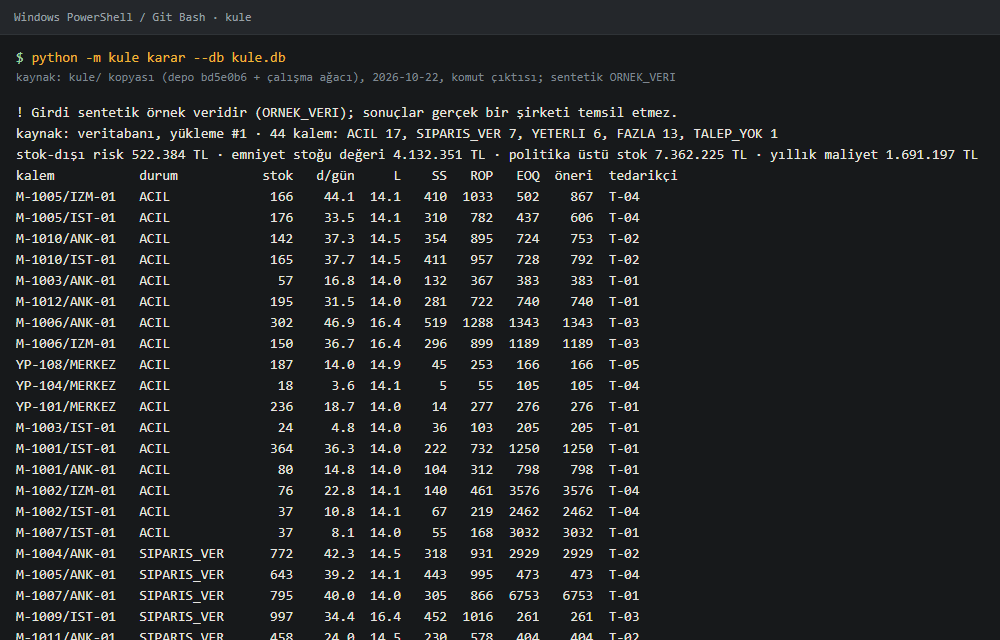
Yedi analiz modülü
Her modül verilere bir soru sorar.
Stok durumu
Kritik stoku ve ölü stoku ayırır.
Sipariş anomalisi
Sipariş, mal kabul ve fatura arasındaki tutarsızlıkları bulur.
Talep tahmini
Geçmiş satıştan gelecek dönemin talebini tahmin eder.
Tedarikçi skoru
Tedarikçi performansını özetler.
Üçlü eşleştirme
Sipariş, mal kabul ve faturayı karşılaştırır.
OEE
Ekipman genel verimliliğini hesaplar.
FBL1N açık kalem mutabakatı
Satıcı açık kalemlerini kontrol eder.
Ekranlar panelden alındı. Panel ve komut satırı şu an Türkçe.
Panelde modül ekranları
Stok
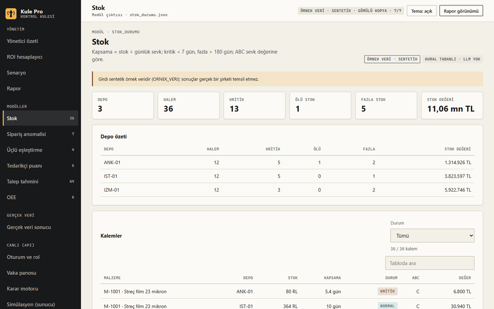
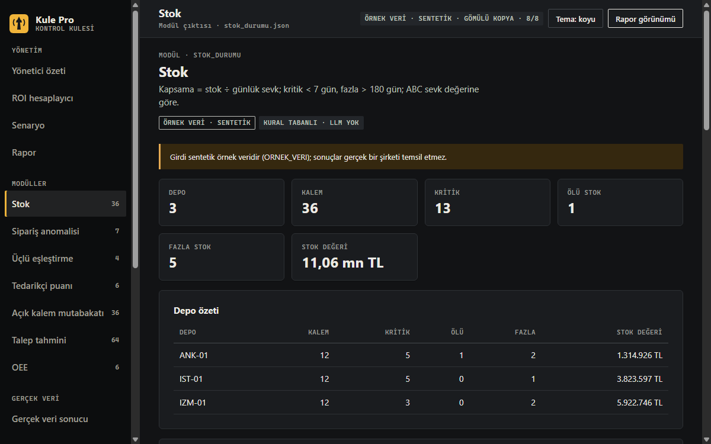
Sipariş anomalisi
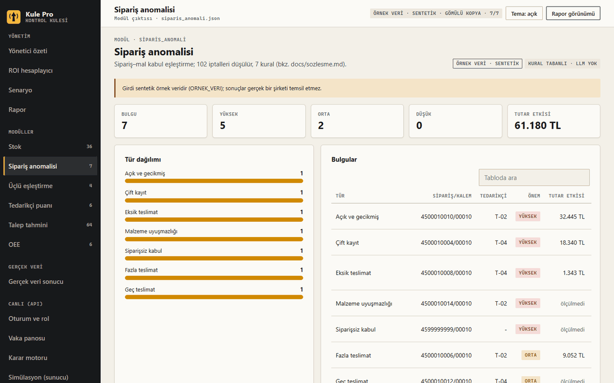
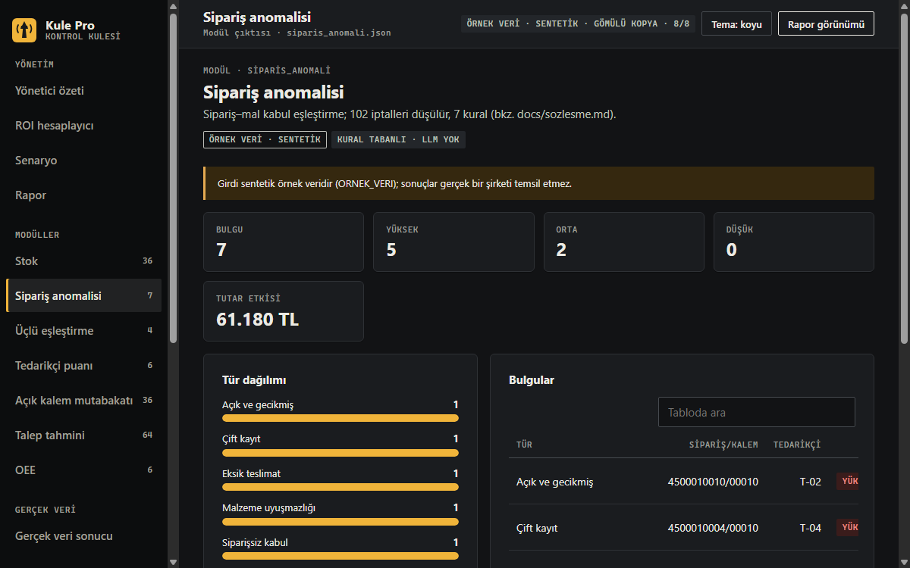
Üçlü eşleştirme
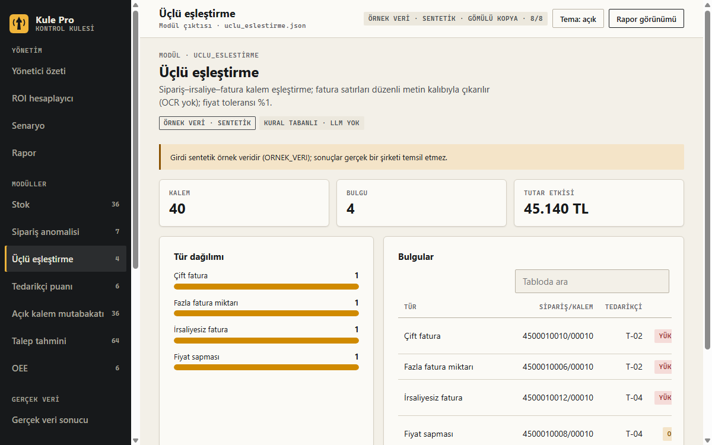
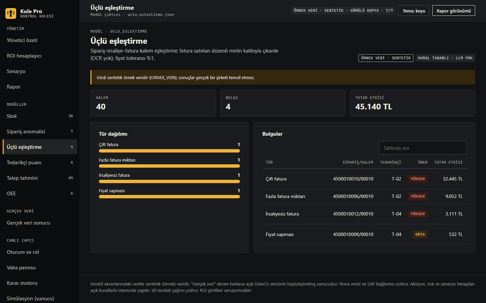
Tedarikçi
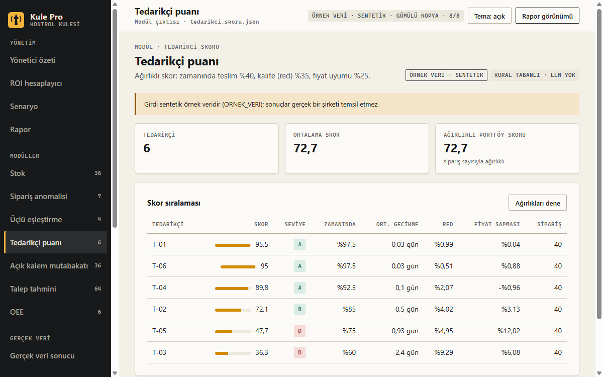
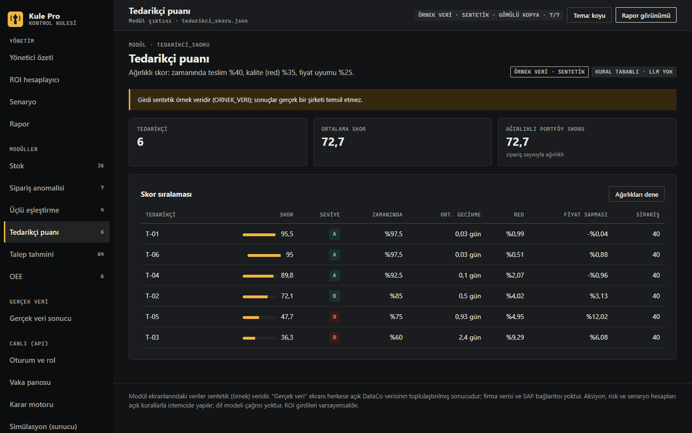
Talep tahmini
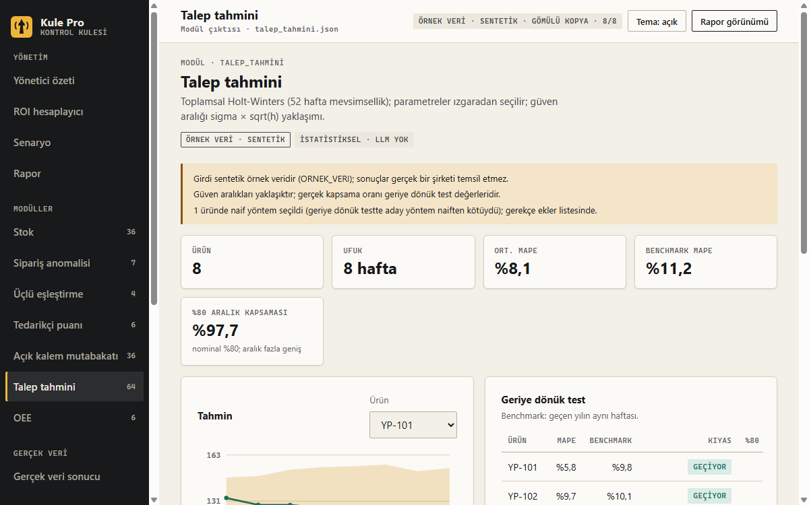
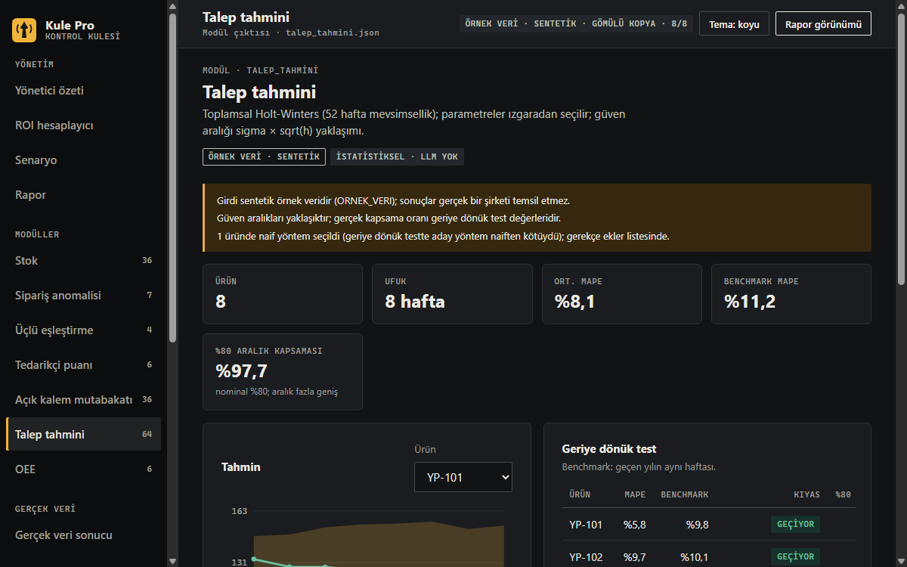
Neyin ölçüldüğü
Bir örnek dosya
Test paketi, bilerek konmuş 18 hatalı bir örnek dosya içerir. Paket bu hataların 18'ini buldu ve listeye fazla bulgu eklemedi. Dosya uydurma verilerle hazırlandığı için bu sonuç, kuralların konmuş hataları yakalayabildiğini gösterir.
Ne ölçüldü
Toplam 1652 otomatik test var: 1298 Python testi, 120 ajan orkestratörü testi ve 234 Node testi. Bu koşuda 4 test atlandı; bu yüzden 1652 rakamı otomatik test sayısıdır, geçen test sayısı olarak okunmamalıdır.
Değerlendirme seti 123 vakadan oluşur. Dosya elle yazılmış kayıt olarak etiketlidir: model yanıtları kayıttan oynatılır, puan kodun bu yanıtlara verdiği tepkiyi ölçer, modelin kalitesini ölçmez.
Açık veri: 180.519 ham satırdan 172.765'i kabul edildi. Satırlar DataCo açık veri setinden gelir ve veri seti CC BY 4.0 lisanslıdır.
Bu sayılar 16 Kasım 2026 tarihli, 0.14.0 sürümüne ait koşudan alındı. Kanıt sayfasındaki sayılar daha eski bir koşuya ait; iki sayfa güncelleninceye kadar farklı sayılar görebilirsiniz.
Hız sınırı
0.14.0 sürümünün API'si 37 yol ve 41 işlem içerir. /v1 altındaki istekler IP adresi başına dakikada 300 ile sınırlıdır. Sınırı aşan istek 429 yanıtı alır ve Retry-After başlığında ne zaman yeniden denenebileceğini görür.
Bu sınır kimlik doğrulamanın yerine geçmez. Önünde bir ters vekil sunucu varsa bütün istemciler tek IP olarak görünür ve sınır hepsine birlikte uygulanır.
Gerçek SAP çıktısıyla henüz denenmedi
Ölçümler örnek dosyalar ve açık veriyle yapıldı; ilk gerçek SAP çıktısını pilot kullanımda deneyeceğiz. Sürüm demo ve pilot için tasarlandı; üretim düzeyinde güvenlik bu sürümün kapsamı dışında. Gerçek veride doğruluk oranı henüz bilinmiyor.
Sürümler
0.8.1'den 0.14.0'a kadar eklenenler: satıcı ana verisi ve mükerrer satıcı adayları, boş yüklemenin reddi, günlük dosyası ve veritabanı yedekleme komutları, karar tablosunun CSV olarak indirilmesi. Tam liste sürüm notlarında.
Sık sorulan sorular
Kaynak kodu açık mı?
Hayır. Ürünün kaynak kodu paylaşılmıyor. Bu sitede test sonuçları, sayılar ve doğrulama dosyaları yer alır.
Demo ve kanıt sayfaları: demo · test kanıtı